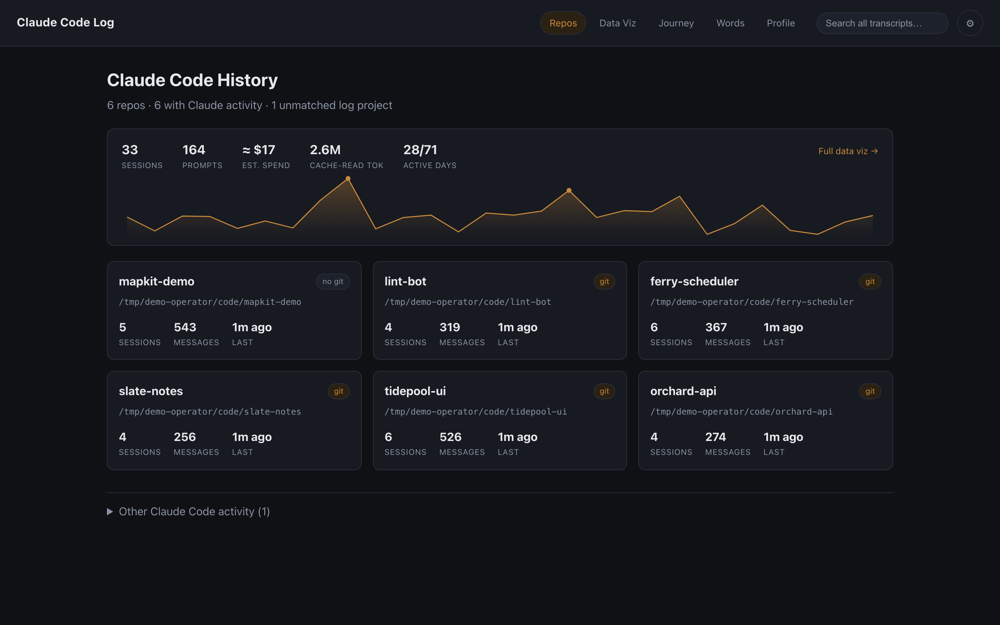
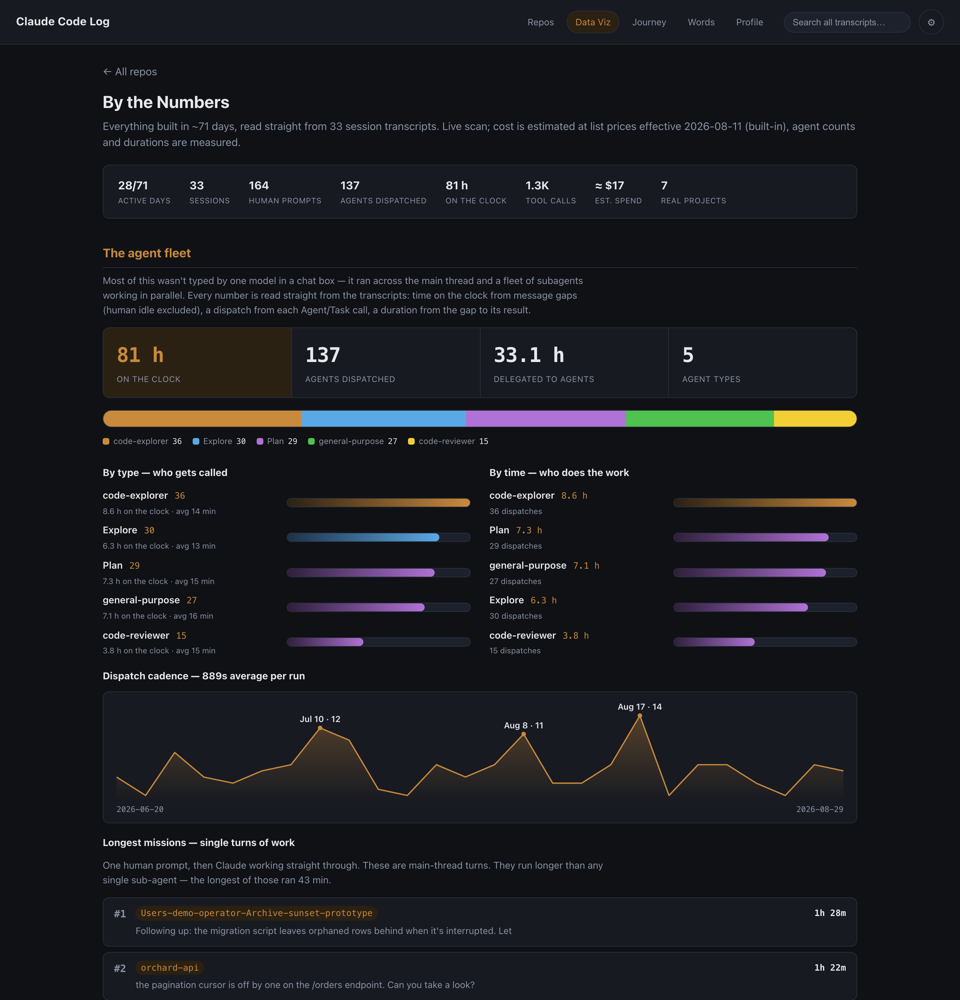
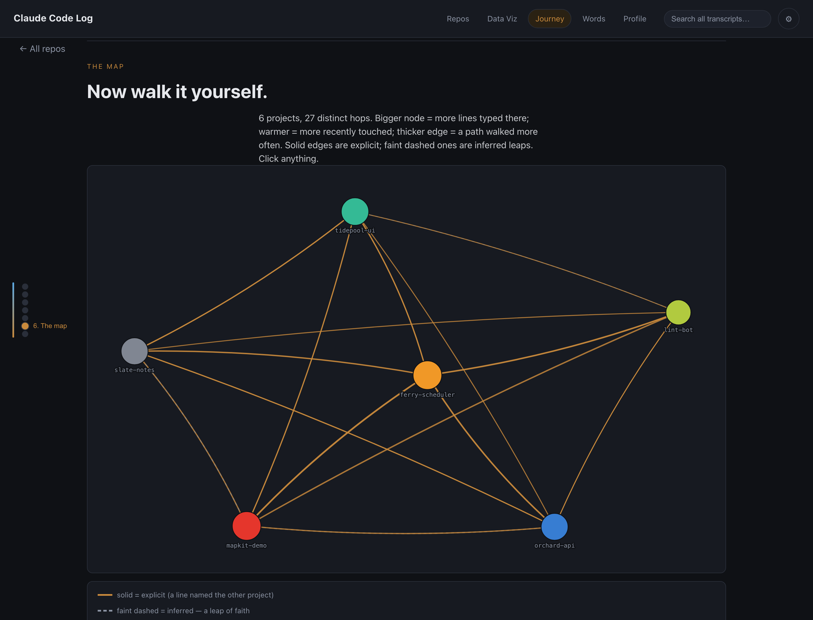
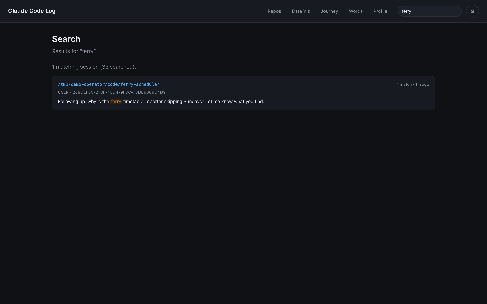
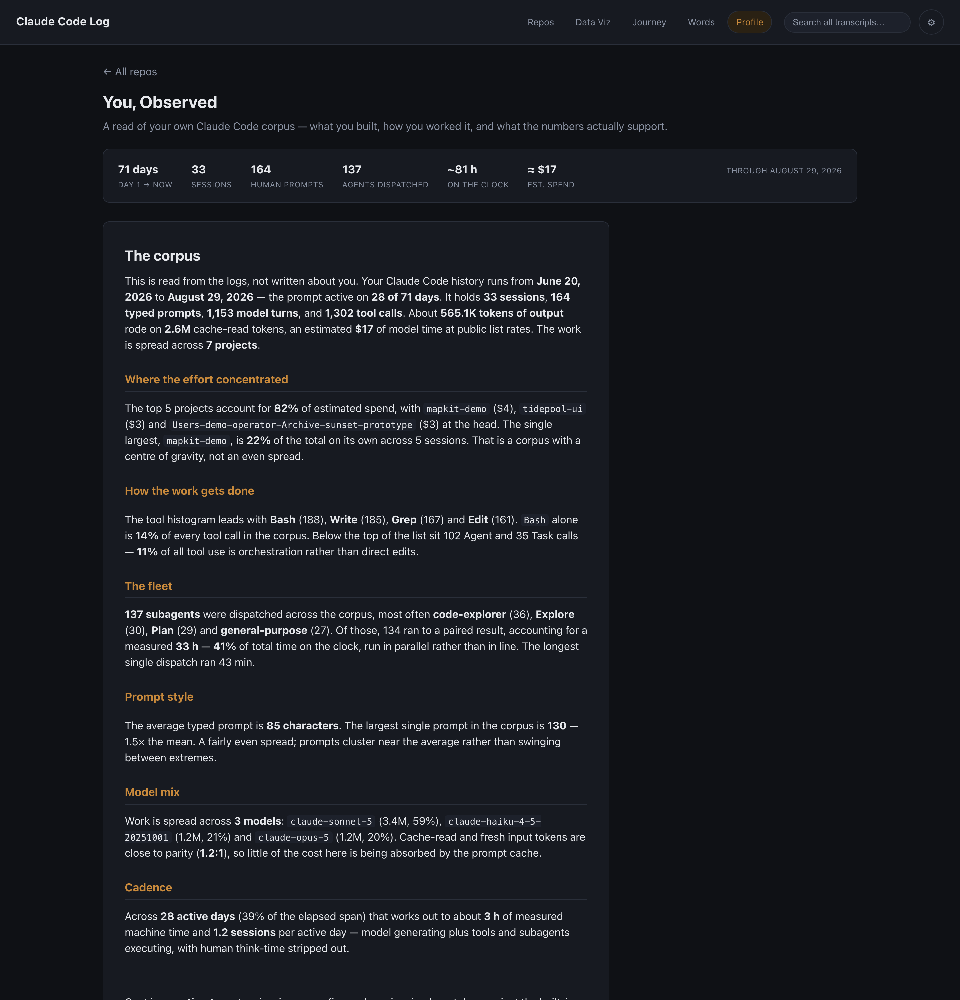

Claude Code writes a JSONL transcript of every session on your machine. Claude Code Log reads them all — every repo, every prompt, every token — and turns them into a dashboard you can actually think with. Local only. Read only. Yours only.
npm run devyour own history, at 127.0.0.1:5189
npm run demoa synthetic corpus — nothing of yours on screen
Five tabs and a search box
The app scans your session logs, crawls your repositories, and joins the two. Each view below is a different question asked of the same corpus.

Every repository under your configured base root, joined to the sessions run inside it. Drill into one to read its CLAUDE.md, README, manifests, and memory index next to the parsed transcript of each session — the specs and the work, side by side.

The whole corpus at once: estimated spend by day and by project, token flow through the prompt cache, the subagent fleet, your longest missions. Charts are hand-rolled SVG — no charting library anywhere in the tree.

A scroll-driven retelling of how you moved between projects. Node size is lines typed, warmth is recency — and the graph is honest about certainty: solid edges are explicit switches, dashed ones are inferred, never presented as fact.

Not a tab — a box in the top bar, live on every page. Full-text across every transcript you have ever produced, newest first, with highlighted snippets. A raw-text prefilter skips ~95% of files before any JSON is parsed, so it stays fast on a multi-gigabyte corpus.
you said "add auth to the login page" it heard added auth to every page in the app you replied "that's not what I meant — only the login form" category: taken literally · confidence: explicit
The moments your own phrasing changed the outcome. Corrections in your prompts — "that's not what I meant", "typo, I meant…" — are paired with the earlier phrase that got taken the wrong way, so you can see which words steered sessions off course.

A written, long-form read of whoever's corpus the app is pointed at — computed live on every load, nothing hardcoded. Sections drop out entirely when the signal that would justify them is absent, so a thin corpus renders a short honest page rather than a padded one.
The posture
This tool reads the most candid document on your machine — everything you ever typed to Claude. The constraints below are not settings. They are the architecture.
How it works
Vite serves the app and, through connect middleware in the same process, a small read-only API. The browser never touches the filesystem directly.
scan ~/.claude/projects/*/*.jsonl every session transcript, parsed defensively join repo path ⇄ encoded log dir lossless by encoding, never by lossy decoding serve GET-only /api/* on 127.0.0.1 eight read-only routes, one per view plus a health probe